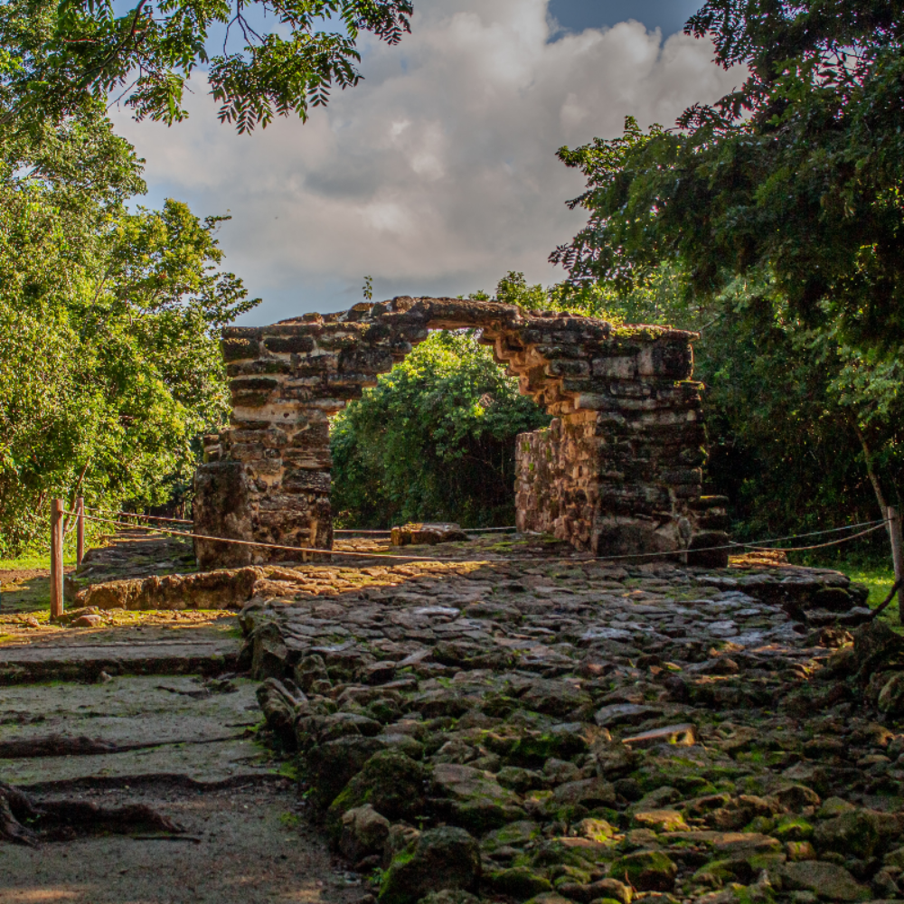
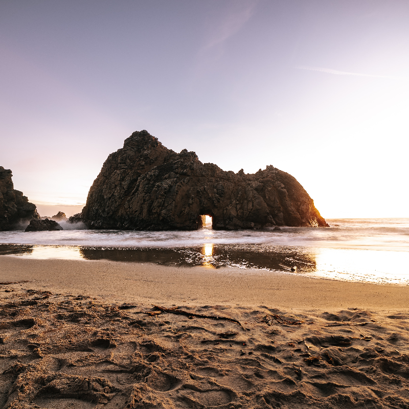
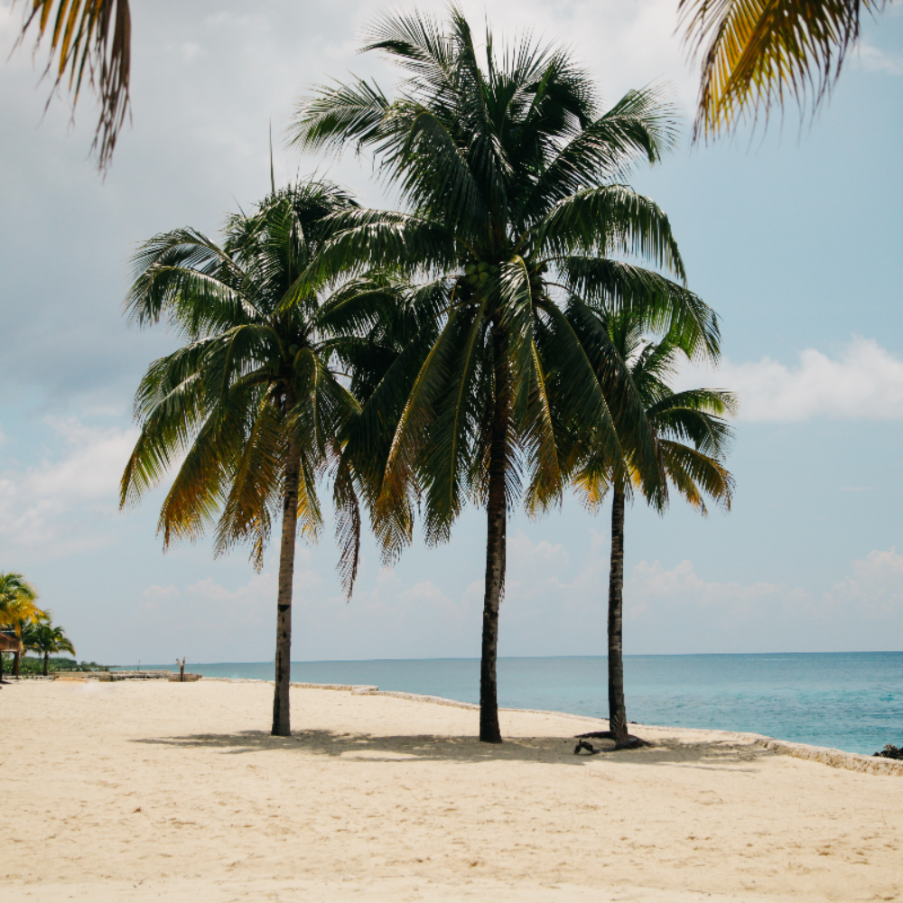

Cozumel's Top Places to Visit
Zona Arqueológica San Gervasio
San Gervasio is an archaeological site of the pre-Columbian Maya civilization, located in the northern third of the island of Cozumel off the northeastern coast of the Yucatán Peninsula, in what is now the Mexican state of Quintana Roo. San Gervasio's pre-Hispanic name was Tantun Cuzamil, Mayan for Flat Rock in the place of the Swallows.
The ruins were once a hub of worship of the goddess Ix Chel, an aged deity of childbirth, fertility, medicine, and weaving. Pre-Columbian Maya women would try to travel to San Gervasio and make offerings at least once in their lives. In 1560, the Spanish historian, Diego Lopez de Cogolludo, wrote: "The pilgrims arrive at Cozumel for the fulfillment of their vows to offer their sacrifices, to ask help for their needs, and for the mistaken adoration of their false gods." The bishop of Yucatán, Diego de Landa, wrote in 1549 that the Maya "held Cozumel in the same veneration as we have for pilgrimages to Jerusalem and Rome, and so they used to go to visit and offer presents there, as we do to holy places; and if they did not go themselves, they always sent their offerings.
Punta Sur Beach
Punta Sur marks the southern point of Cozumel and is part of the Parque Punta Sur, a 247-acre (1.00 km2) ecological park that covers the reefs, beaches, lagoons, and low forest of the surrounding area. The reef system is also part of the Arrecifes de Cozumel National Park.
Some of the sandy beaches are protected to allow hatching for sea turtles. Observation towers have been erected at the Columbia lagoon to watch wildlife. Off Punta Sur is the Devil's Throat scuba diving area, while in the closer reef visitors can snorkel. The dirt road area is accessible to off-road vehicles and allows some tours to access the area as part of a guided excursion. At the end of the dirt road you will find 2 beach clubs, Papito's Beach Club Restaurant and Bar as well as the Punta Sur Beach Club. Included in the entrance fee to Punta Sur Park is also a guided boat ride on the Colombia Lagoon for bird watching, sightseeing, crocodile observation and more.
History of Cozumel

Measuring about 29 miles (46 km) from northeast to southwest and averaging 9 miles (14 km) in width, it is the largest of Mexico’s inhabited islands. Geologically similar to the Yucatán, the interior of Cozumel consists of a plain broken by low hills that are only about 50 feet (15 metres) above sea level. Much of the island is covered by scrubby tropical jungle. Poor soils have discouraged agriculture on the island, but traditional crops include tropical fruits, henequen (a fibre crop), corn (maize), and cassava (manioc).
Clear, warm water, spectacular coral reefs, and abundant marine life make Cozumel one of the world’s best scuba-diving destinations as well as a major resort. Indeed, the economy of Cozumel has been based on tourism since the 1970s. In addition to the diving opportunities, other water sports, and fishing, tourists are attracted by Cozumel’s tropical climate, sand beaches, and duty-free port shopping, along with its atmosphere, which is more relaxed than that of nearby Cancún. Substantial resort development on the island’s protected western coast extends both north and south from the island’s main town and commercial centre, San Miguel de Cozumel. Chankanaab National Park, just south of San Miguel, has a museum, botanic garden, and archaeological park. Cruise ships dock regularly at a pier south of San Miguel. Cozumel has regular ferry service from Playa del Carmen and Puerto Morelos. An international airport is located 2 miles (3 km) south of San Miguel.
Cozumel was a commercial and ceremonial centre during the Mayan period (about 250 to 950 CE), and the island has several small archaeological sites. In 1518 Juan de Grijalva led the first Spanish expedition to Cozumel. In 1519 Hernán Cortés used the island as a base for Spanish efforts to conquer the Maya. During most of the Spanish colonial era, Cozumel was only sparsely populated, but trading ships and pirates occasionally sought shelter and replenished supplies on the island, which was protected behind offshore reefs. Area 189 square miles (489 square km). Pop. (2005) 71,401; (2010) 77,236.